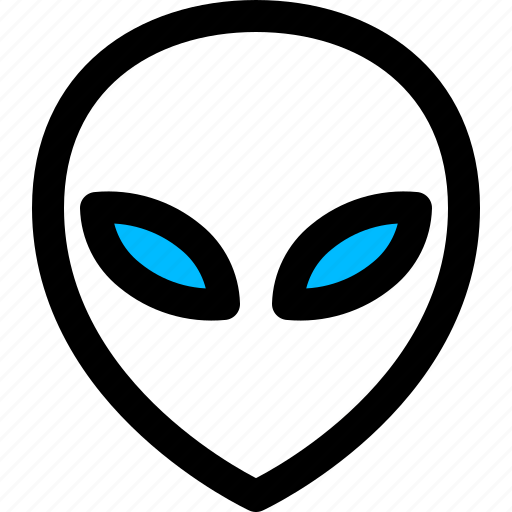
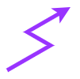

Arsenal
Arsenal
This page serves as the central hub for my offensive security projects.
It includes remote access tools (RATs), webshell frameworks, shellcode implants, post-exploitation utilities, and other research projects developed for cybersecurity education and authorized security testing.
Each project documents its architecture, implementation details, and the ideas behind its design.
This page will continue to grow as new projects and research are added.

Alien
Alien is a modular webshell framework for cybersecurity research, education, and post-exploitation.
It provides a unified platform for managing multiple webshell technologies through reusable components such as OneShell, NebulaPulsar, Event Horizon, and DriftingComet.
- Type: WebShell Framework
- Framework: C#
- Supported Technologies: PHP / ASP / ASP.NET / JSP / JSPX / CFML / Perl / Ruby
- Availability: Available
- Repository: GitHub

Related articles:
DuplexSpy
An open-source C# RAT supporting TCP, TLS and HTTP communication.
- Type: Remote Access Tool
- Language: C#
- Availability: Available
- Repository: GitHub

Related articles:
Eden-RAT
Eden-RAT is an open-source Linux GUI-based Remote Access Tool developed in C# with a Python payload, intended for legitimate penetration testing and reconnaissance tasks.
- Type: Remote Access Tool
- Language: C#/Python
- Availability: Available
- Repository: GitHub

Related articles:
OpenShell
OpenShell is a lightweight reverse shell management server written in Go, designed to manage interactive reverse shell sessions through a web interface.
- Type: Reverse Shell Management Framework
- Language: Go
- Availability: Available
- Repository: GitHub
Related articles:
WinPower
A Windows remote access tool using a PowerShell payload.
- Type: Remote Access Tool
- Language: C#/PowerShell
- Availability: In Development
- Repository: GitHub
EgoDrop
A GUI-based, experimental Linux Remote Access Tool for learning post-exploitation
- Type: Remote Access Tool
- Language: C#/C++
- Availability: In Development
- Repository: GitHub
DustHarbor
DustHarbor is an open-source proof-of-concept RAT featuring a shellcode-based implant.
- Type: Remote Access Tool
- Language: C#/C
- Availability: In Development
- Repository: GitHub
pyWinDoor
A Windows remote access tool using a Python payload.
- Type: Remote Access Tool
- Language: C#/Python
- Availability: In Development
- Repository: GitHub
AngelDust
A command-and-control (C2) remote access tool designed for Windows.
- Type: Remote Access Tool
- Language: C#/C++
- Availability: In Development
THANKS FOR READING
Thank you for taking the time to explore my projects.
Most of these tools began as personal learning projects and gradually evolved through experimentation, reverse engineering, and security research.
I hope they are useful for anyone interested in offensive security, post-exploitation techniques, or software design.
This arsenal will continue to expand as new ideas and research are added.